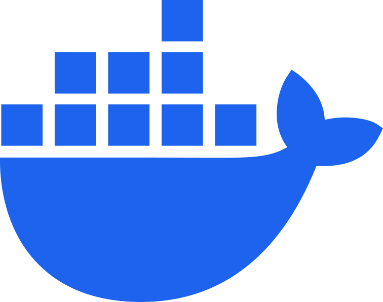
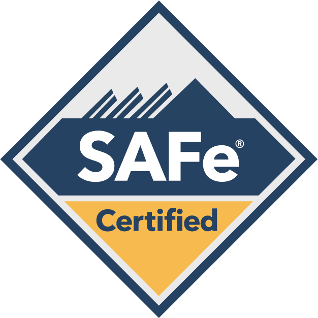

Looking for a quick overview? Click here to see my CV.
Work Experience
C++ Software Engineer
Amadeus IT
Starting from September 2023, I have been working at Amadeus as a C++ Software Engineer. My job focuses on optimizing the performance of our search engine, which is responsible for finding the cheapest available flights. My key responsibilities include:
- Performance Optimization: Enhancing algorithms and refining data structures to boost the speed and accuracy of our search results.
- Comprehensive Testing: Regularly conducting unit and non-regression tests to ensure our software is robust and reliable.
- Performance Measurement and Reporting: Continuously monitoring system performance, analyzing key metrics, and creating detailed reports to guide our optimization efforts.
- Documentation: Crafting clear and detailed documentation to support our products and assist colleagues.
- Support and Collaboration: Providing technical support and guidance to my teammates. Moreover, I have been Scrum Master for my team many times (as a replacement).
I joined Amadeus for a clear reason: to immerse myself in an international environment and discover new possibilities beyond my home country and comfort zone. Leaving Spain was a difficult decision, but ultimately, it was the right one.

Docker
SAFeQA/DevOps Engineer
During my years at university, I worked at Orenes (in Murcia, Spain) as a QA/DevOps Engineer. My job was slightly different each year, but in summary my key responsibilities included:
- Performance testing: Adding features to the code can sometimes lead to an increase in response time, execution time, or memory complexity. My job was to create unit tests to measure execution time, save the results, and compare them with previous instances stored in database.
- Pipeline management: Triggering the tests manually is not as efficient as having them launched whenever a new pull request is created. This ensures the testing is performed regularly and before critical failure may happen.
I met amazing people and I take many memories from that time. I will forever be grateful to the team for allowing me to become part of their day-to-day work. If they ever read this, I hope they know I would be a totally different person without them.
Private tutoring
During my years at university I frequently held private lessons for all types of students, ranging from high school to university, and focused on Mathematics, Physics, Chemistry and Programming.
This was a great learning experience for me, and got me thinking in the possibility of becoming a teacher in the future. There is something special in transmitting your knowledge to a person that is willing to listen and to learn from you.
Education
I studied a special program at my university that allowed me to do two Bachelor's degrees at the same time. Here is a brief of the experience.
Mathematics
This is one of the biggest achievements of my life, no doubt. Mathematics is a degree that changes one from the inside out, and puts into perspective everything you thought you knew about yourself.
To conclude the degree I delivered my thesis Transformadas de Fourier y de Radón, y aplicaciones (Fourier and Radon transforms, and applications), one of the projects I am most proud of making.
Comp. Engineering
Since I was very young (3 years old I am told) I have always been interested in computers and machines in general. There is something magical about telling the computer what to do and seeing it perform exactly as you have instructed.
Personal
There is so much of this place in my DNA. If you asked me where is the attractiveness of it I wouldn't be able to tell right away, yet I could be talking for hours and hours about its wonders. If I had to summarize the beauty of Murcia, it would be:
There is so much of this place in my DNA. If you asked me where is the attractiveness of it I wouldn't be able to tell right away, yet I could be talking for hours and hours about its wonders. If I had to summarize the beauty of Murcia, it would be:
There is so much of this place in my DNA. If you asked me where is the attractiveness of it I wouldn't be able to tell right away, yet I could be talking for hours and hours about its wonders. If I had to summarize the beauty of Murcia, it would be:
A love letter to Murcia
Everyone has a home and this is mine, there is so much this city has given to me
There is so much of this place in my DNA. If you asked me where is the attractiveness of it I wouldn't be able to tell right away, yet I could be talking for hours and hours about its wonders. If I had to summarize the beauty of Murcia, it would be:
> The people. Everyone is warm and friendly, people from the south are usually welcoming, but here is specially true.
> The food. Best of them are the marinera (she sailor), the pastel de carne (meat pie) and the paparajote (n.t.).
> The streets. The city breaths, and you can tell form just walking around the city center. And speaking of that, you can walk everywhere!